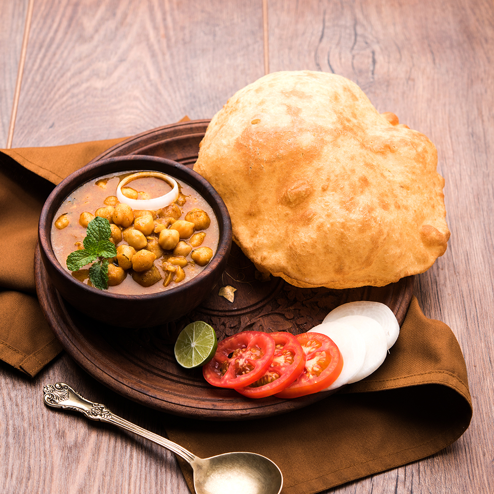

Chhole Bhatoore

Description
Chole bhature (Hindi: छोले भटूरे) is a food dish popular in the Northern areas of the Indian subcontinent.It is a
combination of chana masala (spicy white chickpeas) and bhatura/puri, a fried bread made from maida. Although it
is known as a typical Punjabi dish, there are varied claims around the origin of dish.
Chole bhature is often eaten as a breakfast dish, sometimes accompanied with lassi. It can also be street food or
a complete meal and may be accompanied with onions, pickled carrots, green chutney or achaar.
Ingredients
- Chhole
- Flour
- Curd
- Water
- Onion
- Tomato
- Garlic
- Ginger
- Masalas
Steps
-
Pressure cook the chickpeas
To prepare the chole, soak chickpeas in water overnight or for 6-8 hours. Then, put a pressure cooker on
high flame and add the soaked chickpeas in it along with salt to taste and 1 tea bag or you can also put 2-3
tea leaves and wrap it in a cloth. Cook the chickpeas for 15-20 minutes. (Note: The tea leaves or the tea
bag will change the colour of gravy from dark brown to black.)
-
Saute the onion
Meanwhile, put a pan on medium flame and heat a little oil
in it. Add the cumin seeds and sliced onion to the pan. Saute the onion till golden brown, then add minced
garlic, ginger and onion paste. Saute the ingredients for a few seconds until the raw smell of garlic goes
away and then add tomato puree.
-
Add Spices and cook the chhole
Once the oil is separated, add turmeric,
red chilli powder, coriander powder and chana masala. Cook the tomato-onion mixture for another two minutes,
and then add cooked chole with little water. Stir well to mix the masala with the chole or the chickpeas.
Check salt and allow it to cook for a few minutes. The chola is done! You can garnish with chopped onion and
coriander leaves
-
Prepare the dough
Now for making the bhaturas, combine together
all-purpose flour or maida and wheat flour or atta in a dough kneading plate. Then add salt and oil to it.
Mix well. Add yoghurt to the flour mixture and knead the dough well. You can add a little water and knead
the dough. When it is done, cover the dough with a kitchen towel and allow it to rise.
-
Cook the bhatoora and serve!
Now, put a kadhai on high flame and
meanwhile, take equal quantities of the dough and roll big size puris (bhatura). When the oil is hot enough,
carefully add these bhaturas to the oil and deep fry. Repeat with the rest of the dough. Then take a plate
and serve Chola bhatura hot!
Back to HomePage